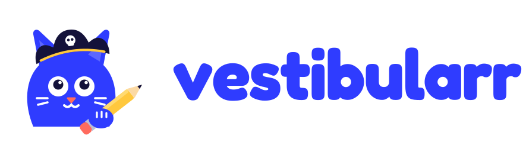
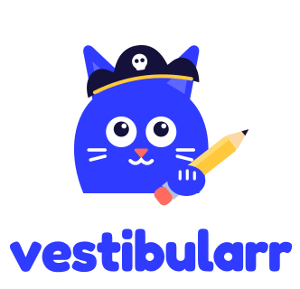
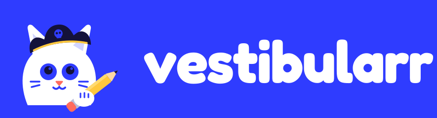
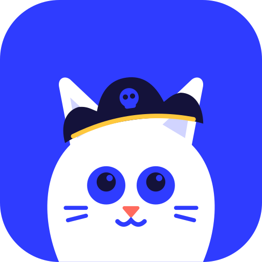
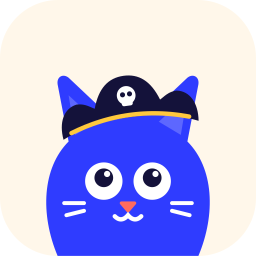
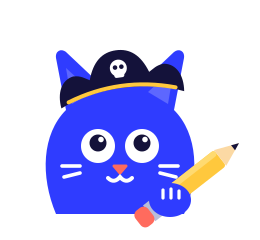
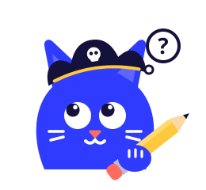
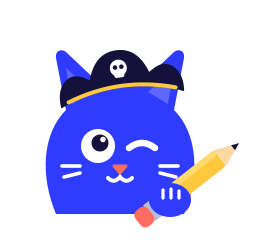
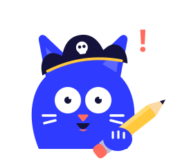
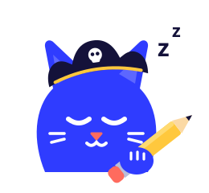

Moderna, limpa e despojada. Divertida sem forçar: um mascote que acompanha o aluno e a marca que sai do caminho quando é hora de estudar.





Wordmark em Fredoka Bold convertida em curvas, sempre em minúsculas. Área de respiro mínima: a largura da orelha do mascote. Nunca distorcer, girar ou colocar sobre fotos sem a versão negativa.

Grafite é um gato pirata que navega pelos mares do vestibular com um lápis no lugar da espada. O chapéu é a aventura e o lápis é o estudo: ele é curioso, otimista e zoeiro na medida, nunca debochado.
Formas geométricas, cor chapada (cobalto), detalhes brancos e contorno de adesivo: funciona de 24 px a outdoor, em uma ou três cores.
Início, logo, telas vazias
Acertou, conquista, meta batida

Tutor IA, carregando, dúvida

Dicas, onboarding, convite

Erro, atenção, prazo acabando

Offline, sequência perdida
Regra 60/30/10: creme e branco dominam, cobalto estrutura e as cores quentes só pontuam. Áreas (Linguagens, Humanas, Natureza, Matemática) continuam com as cores do app.
Enunciados e resoluções pedem leitura longa e confortável. Por isso a Inter fica no texto e a Fredoka só aparece onde a marca fala.
“Mandou bem! +1 pro tesouro.” 🏴☠️
“Quase! Bora ver o pulo do gato?”
“Sem internet? Sem drama. Tô guardando tudo aqui.”
“5 dias navegando sem parar. Nada segura essa tripulação!”
Fala como um veterano gente boa: frases curtas, uma piada por tela no máximo, nunca ironia com o erro do aluno. Na prova e no simulado, o mascote some: foco total.
100 questões resolvidas